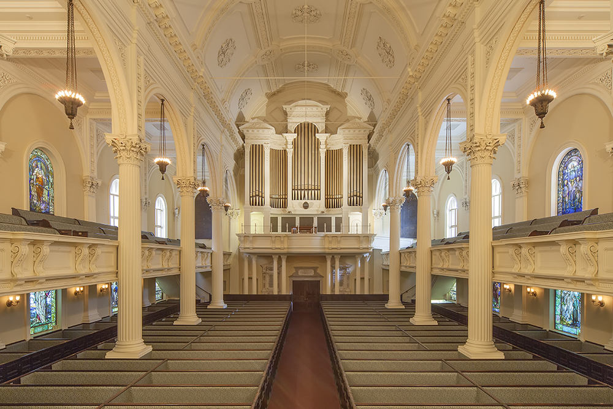
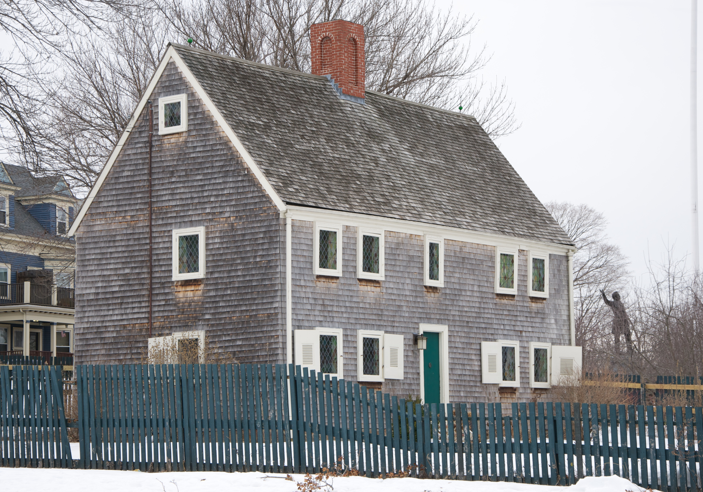
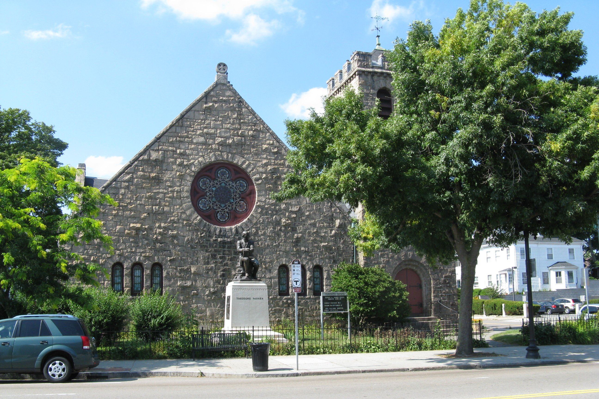
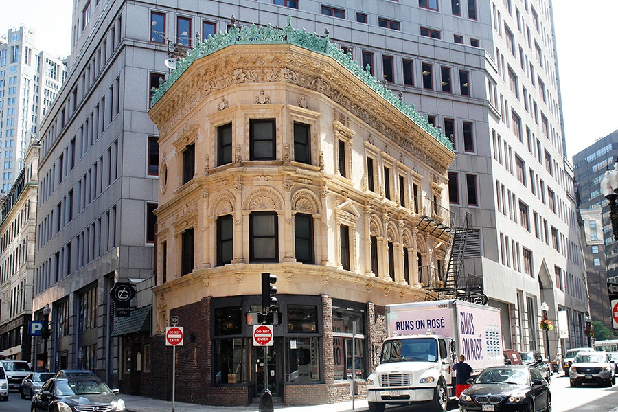

|  |
Arlington Street ChurchDue to its geographic prominence and the notable ministers who have served the congregation, the church is considered to be among the most historically important in American Unitarianism and Unitarian Universalism. Completed in 1861, it was designed by Arthur Gilman and Gridley James Fox Bryant to resemble James Gibbs' St. Martin-in-the-Fields in London. The main sanctuary space has 16 large-scale stained-glass windows installed by Tiffany Studios from 1899 to 1929. On May 17, 2004, the Arlington Street Church was the site of the first state-sanctioned same-sex marriage in the United States. 355 Boylston Street - Study report |
|  |
James Blake HouseThe James Blake House is the oldest surviving house in Boston, Massachusetts, United States. The house was built in 1661 and the date was confirmed by dendrochronology in 2007.[2] It is located at 735 Columbia Road, in Edward Everett Square, and just a block from Massachusetts Avenue. The Dorchester Historical Society now owns the building and tours are given on the third Sunday of the month. 210 East Cottage Street - Study report |

|
International Trust CompanyThe nine-story masonry-clad building was built in 1892-93 to a design by William Gibbons Preston. It is an early Boston example of the Beaux Arts style, and is structurally an early prototype of the use of skeleton framing. It was enlarged in 1906, to a design by Woodbury & Leighton.[2] It was connected by internal connections to the adjacent Compton Building in 1961, when the two buildings were under common ownership. 45 Milk Street - Study report |
|  |
Theodore Parker Unitarian ChurchBuilt in 1900 to a design by West Roxbury native Henry M. Seaver, it is a locally significant example of Normanesque architecture, and is adorned by stained glass windows created by Louis Comfort Tiffany and his firm. The church was listed on the National Register of Historic Places in 2020. The congregation it houses was founded in 1712, and is named for the influential Transcendentalist and abolitionist Theodore Parker, who was the congregation's minister in the 1840s. 1851 Centre Street - Study report |

|
Trinity Neighborhood HouseThe Trinity Neighborhood House is a historic brick townhouse at 406 Meridian Street located in the Eagle Hill section of East Boston, Massachusetts. The house was built in 1847 for entrepreneur Noah Sturtevant and was thus named the Noah Sturtevant House. In 1917, it was named the Trinity Neighborhood House and Day Nursery. Since 1888, it operated as a social service center and philanthropy of Trinity Church.[2] 406 Meridian Street - Study report |
|  |
Proctor BuildingThe Proctor Building, at the corner of Kingston and Bedford streets downtown, is many people’s favorite small commercial building in Boston – despite the gruesomely defaced condition in which it has long moldered. 100-6 Bedford Street - Study report |
The Friendly ToastThe Friendly Toast is the best place to visit for a fun brunch or lunch. The restaurant serves creative meals in a unique atmosphere, always resulting in a great dining experience. They are also environmentally friendly and support a new charity each month. Visit at this address: 35 Stanhope Street, Back Bay |
|

|
Buttermilk and BourbonButtermilk and Bourbon serves up the best southern food in Boston in a vibrant atmosphere. Guests will be transported to New Orleans by the New Orleans-inspired murals and the delicious meals, from house-made biscuits to oyster chowder. Visit at this address: 160 Commonwealth Ave,Boston |
3 Little FigsHead over to 3 Little Figs for a delicious breakfast and choose from a wide variety of muffins, scones, cookies, salads, and sandwiches. You will also be amazed by the espresso drinks with great foam art and an equally good flavor. Visit at this address: 278 Highland Ave, Somerville |
|
Santarpio'sThis restaurant, now known for its iconic New-York style pizzas, started off in 1903 as a bakery. They now serve thin crust pies an assortment of toppings, all kept at a low price. If you are looking for a good slice of pizza, look no further! Visit at this address: 111 Chelsea St, Boston |
|

|
Mike's PastryIf you are in the mood for something sweet, head over to Mike’s Pastry to get one of their famous cannolis. Try one of the 19 cannoli flavors or try some biscotti, cookies, lobster tails, cream puffs, or macaroons. Visit at this address: 300 Hanover St, Boston |